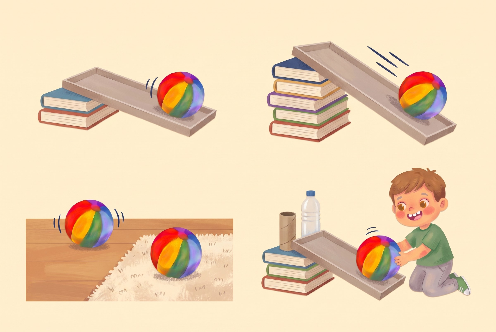
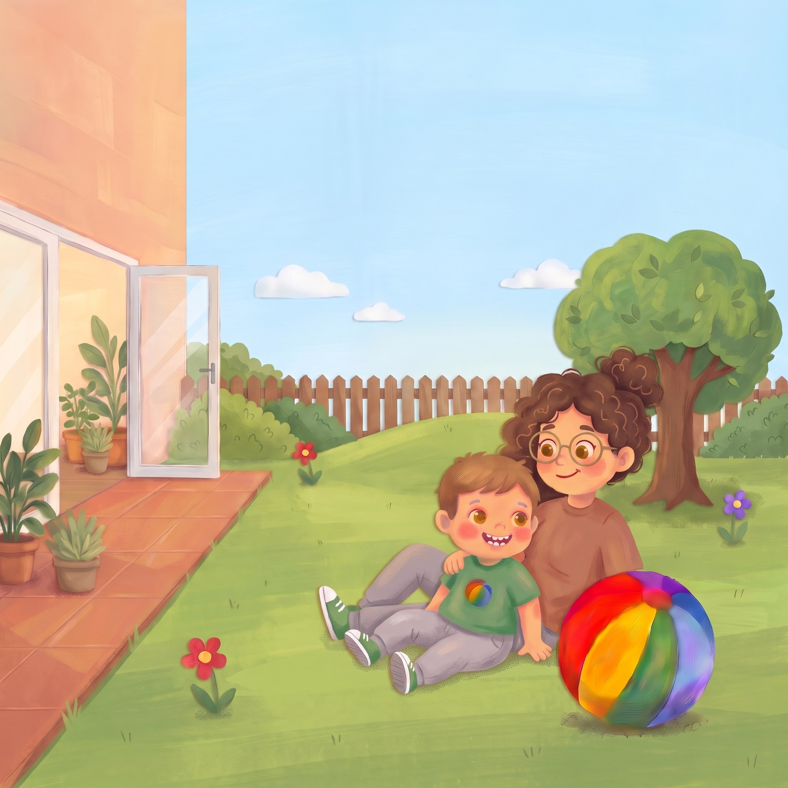

Necesitás: una bandeja o una tabla, libros, una pelota, un rollo de papel de cocina vacío y una botella de plástico vacía con tapa.

| Qué pruebo | Yo creo que… | Lo que pasó |
|---|---|---|
| Rampa baja | ||
| Rampa alta | ||
| Piso liso o alfombra: ¿dónde frena antes? | ||
| Carrera: 1.°, 2.° y 3.° |
En la carrera, anotá cuál llegó en primer, segundo y tercer lugar.

El concepto. La velocidad dice cuánto camino se hace en un rato: rápido es mucho camino en poco tiempo. En una bajada, la gravedad hace que una pelota vaya cada vez más rápido; en una subida, la va frenando. Para frenar hay que quitarle velocidad al cuerpo, y eso lleva un tiempo y un espacio: los pies y el roce con el piso van frenando de a poco. Por eso un chico que corre no puede pararse de golpe.
El hito. Muchos chicos empiezan a correr entre los 18 y los 24 meses, más o menos: primero es un trote con las piernas abiertas y los brazos para equilibrarse, y se caen sentados seguido. Frenar a tiempo y doblar mientras corren llega un poco después. Cada bebé tiene su ritmo; ante cualquier duda, lo mejor es consultar al pediatra.
Seguridad. Al correr llegan lejos en segundos: conviene que corran en lugares despejados, sin escalones ni muebles con esquinas, y lejos de la calle, de la pileta y de las escaleras, siempre con un adulto cerca. Mejor con zapatillas cómodas y sin nada en la boca mientras corren.
Para charlar después de leer: ¿Qué cosas de tu casa van rápido? ¿Y cuáles van despacio? Cuando corrés, ¿podés frenar de golpe? ¿Qué pasa con tus pies? Si corren tres chicos, ¿cuántos lugares hay? ¿Quién llega en tercer lugar?